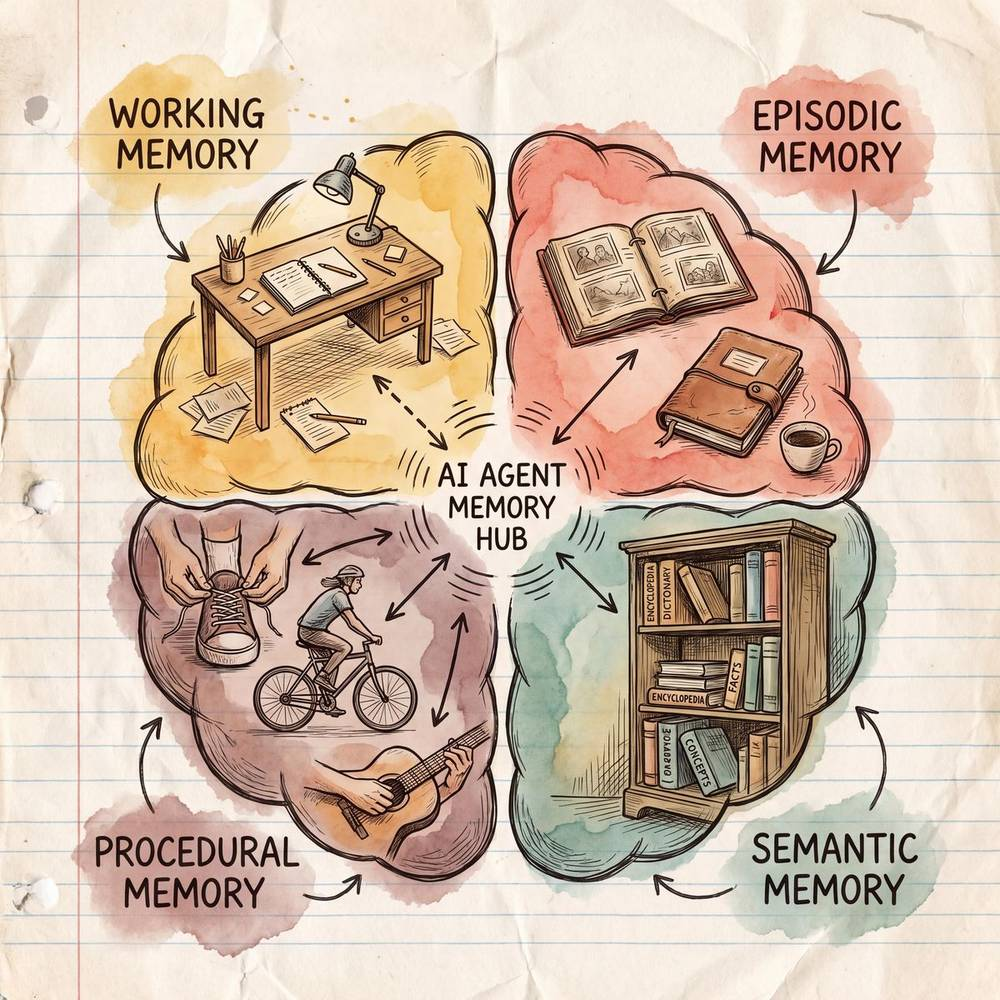
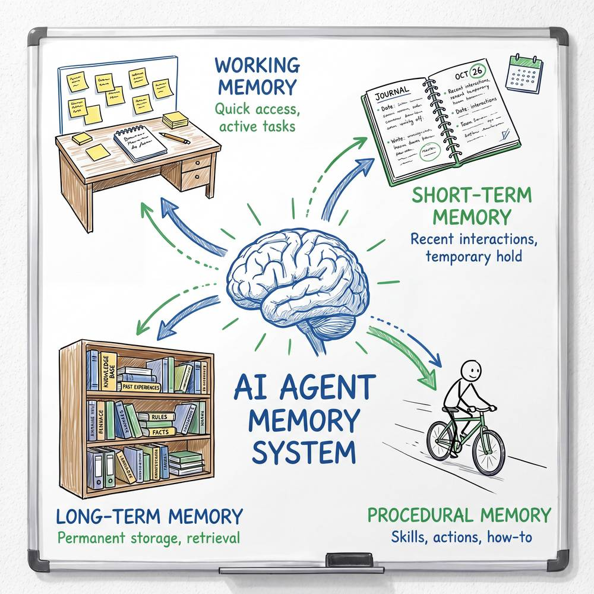
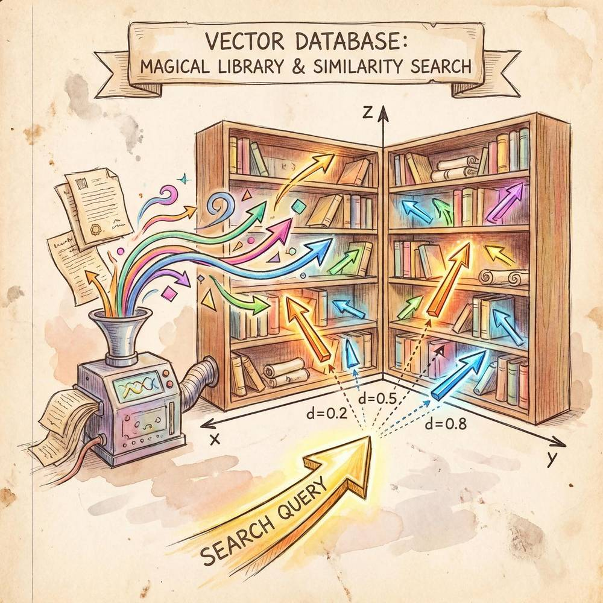

第六章：AI Agent 的记忆系统
导读：如果说大语言模型（LLM）是 AI Agent 的"大脑皮层"，那么记忆系统就是让这颗大脑真正"活"起来的关键基础设施。没有记忆的 Agent，就像一个每隔几秒就会失忆的人——虽然聪明绝顶，却无法完成任何需要持续上下文的任务。本章将系统性地拆解 AI Agent 的四种核心记忆类型、底层实现技术、以及在真实场景中的工程实践。
6.1 记忆系统概述
为什么 AI Agent 需要记忆？
想象一下，你去一家餐厅吃饭。服务员走过来问你要点什么，你说"一份宫保鸡丁"。过了三秒钟，同一个服务员又走过来问："请问您要点什么？"——这就是没有记忆的 Agent 的真实写照。
原生的大语言模型本质上是"无状态"的：每次调用都是一次独立的文本补全过程，模型并不会"记住"你上一轮说了什么。为了让 Agent 具备连贯的对话能力、长期的知识积累、以及基于经验的决策能力，我们必须为它设计一套完善的记忆系统。
类比：人脑的记忆系统
在认知心理学中，人脑的记忆被划分为多种类型。AI Agent 的记忆系统设计在很大程度上借鉴了这一分类体系：

- 工作记忆（Working Memory）——你在心算 "17 × 23" 时，脑子里暂存的中间结果。
- 情景记忆（Episodic Memory）——你记得昨天中午和谁一起吃了什么饭。
- 语义记忆（Semantic Memory）——你知道"地球绕太阳转"，但不记得是在哪一天学到的。
- 程序记忆（Procedural Memory）——你会骑自行车，但如果让你写一篇"如何骑自行车"的论文，你可能抓耳挠腮。
四种记忆类型总览表
| 记忆类型 | 对应人脑 | 存储内容 | 生命周期 | 典型实现方式 | 生活类比 |
|---|---|---|---|---|---|
| 工作记忆 | 前额叶皮层的短期缓冲 | 当前对话上下文、临时推理状态 | 极短（单次会话） | Context Window、滑动窗口、Scratchpad | 做饭时灶台上摆的食材 |
| 情景记忆 | 海马体驱动的自传式记忆 | 历史对话记录、具体事件经过 | 中长期 | 对话日志、事件数据库、时间线索引 | 你的日记本/朋友圈 |
| 语义记忆 | 新皮层存储的通用知识 | 事实、概念、规则、领域知识 | 长期（接近永久） | 向量数据库、知识图谱、关键词索引 | 百科全书/字典 |
| 程序记忆 | 基底神经节与小脑 | 操作流程、行为模式、技能 | 长期且内隐 | SOP 模板、工作流引擎、强化学习策略 | 你会骑自行车但说不清怎么骑 |
这四种记忆并非彼此孤立，而是协同工作的。一个成熟的 AI Agent 在处理用户请求时，往往需要同时调用多种记忆：用工作记忆维持当前对话上下文，用情景记忆回忆与该用户的历史交互，用语义记忆查找相关知识，用程序记忆选择合适的操作流程。

6.2 工作记忆（Working Memory）
定义
工作记忆是 AI Agent 在当前任务执行过程中所维护的短期信息缓冲区。它存储的是"此时此刻正在处理的信息"，包括当前对话轮次的消息、正在推理的中间步骤、临时变量等。
类比：做饭时灶台上摆的食材
你在做一道番茄炒蛋。灶台上此刻摆着：两个番茄、三个鸡蛋、一小碟盐、一瓶油。这些就是你的"工作记忆"——它们是你当前正在使用的材料。冰箱里还有很多食材（那是长期记忆），但你不可能把冰箱里所有东西都搬到灶台上，因为灶台空间有限（Context Window 有 Token 上限）。
特点
- 容量有限：受限于 LLM 的 Context Window 大小（如 GPT-4 Turbo 为 128K tokens，Claude 3 为 200K tokens）。即便是最先进的模型，也无法一次性加载一个企业级知识库的全部内容。
- 速度最快：工作记忆中的信息直接参与当前推理过程，无需额外的检索步骤，响应延迟最低。
- 易失性强：会话结束后，工作记忆中的内容默认丢失（除非显式持久化到其他记忆层）。
- 高相关性：工作记忆中的每一条信息都应当与当前任务高度相关，否则会浪费宝贵的上下文窗口空间，甚至引入噪声导致模型"分心"。
实现方式
（1）Context Window 直接利用
最简单的方式是将历史对话消息直接拼接到 LLM 的输入 prompt 中。这是大多数聊天应用（如 ChatGPT、Claude）的默认做法。
System: 你是一位专业的客服助手。
User: 我想退货。
Assistant: 好的，请问您的订单号是多少？
User: 20240301-00789
Assistant: 查到了，这是一笔3月1日的订单，商品是蓝牙耳机。请问退货原因是什么？
User: 音质不好。以上所有消息都被拼接在一起送入模型，模型可以"看到"完整的对话历史，这就是最朴素的工作记忆。
优点：实现简单、信息完整。 缺点：随着对话轮次增加，Token 消耗线性增长；当对话超过 Context Window 上限时，早期消息会被截断。
（2）滑动窗口（Sliding Window）
当对话历史超过 Context Window 时，保留最近的 N 轮对话，丢弃更早的消息。这就像一个"滑动的取景框"，始终聚焦于最新的对话内容。
def sliding_window(messages, max_turns=10):
"""保留系统提示 + 最近 max_turns 轮对话"""
system_msg = [m for m in messages if m['role'] == 'system']
conversation = [m for m in messages if m['role'] != 'system']
recent = conversation[-max_turns * 2:] # 每轮包含 user + assistant
return system_msg + recent优点：简单高效，能保证最近的对话连贯性。 缺点：可能丢失关键的早期信息（例如用户在第一轮说的订单号，到了第二十轮就被滑走了）。
改进策略：在滑动窗口之外，额外维护一个"关键信息摘要"。例如，每当滑动窗口丢弃消息时，先用 LLM 对被丢弃的内容生成一段摘要，将摘要保留在 Context 中。这样既节省了 Token，又保留了核心信息。
（3）Scratchpad（草稿纸）
Scratchpad 是一种显式的中间状态记录机制。Agent 在执行复杂任务时，会将中间推理结果、临时变量、已获取的信息片段写入一个专门的"草稿区"，并在每次调用 LLM 时将草稿区的内容注入 prompt。
例如，一个数据分析 Agent 在回答"本季度销售额同比增长了多少？"时：
[Scratchpad]
- 已查询：本季度销售额 = 580万
- 已查询：去年同期销售额 = 420万
- 待计算：同比增长率 = (580 - 420) / 420 × 100%Scratchpad 的核心价值在于让 Agent 的推理过程可追踪、可调试，同时避免重复查询已经获取的信息。
6.3 情景记忆（Episodic Memory）
定义
情景记忆存储的是 Agent 经历过的具体事件和交互场景，包括完整的对话记录、任务执行过程、用户的偏好行为等。它的核心特征是有时间标签、有上下文背景、有具体细节。
类比：你的日记本/朋友圈
翻开你的日记本或朋友圈，你会看到这样的内容：
- "2024年3月15日，和小明在星巴克讨论了新项目的技术方案，他建议用 Go 语言重写微服务。"
- "2024年4月2日，客户张总第三次要求修改报表格式，这次他想要饼图替代柱状图。"
这些记忆是有时间线的、有角色的、有情境的——这正是情景记忆的特征。与之相对，"Go 是一种编程语言"这样的知识属于语义记忆，它不依附于任何具体事件。
特点
- 时间有序：每条记忆都带有时间戳，可以按时间线回溯。
- 具有场景上下文：不仅记录了"发生了什么"，还记录了"在什么情况下发生的""涉及哪些人"。
- 支持模式发现：通过分析历史情景，可以发现用户行为模式（如"这个用户每次周一都会查询上周数据"）。
- 存储成本较高：完整记录所有交互细节会产生大量数据。
应用场景
场景一：多轮对话的长期跨会话记忆
用户上周和 Agent 讨论过旅行计划，这周再次提起时，Agent 能说：
"上周您提到想去京都看樱花，预算大约 8000 元。您后来决定了吗？需要我帮您查一下最新的机票价格吗？"
这种跨会话的连续性体验，依赖的就是情景记忆。
场景二：从历史中学习
一个编程助手 Agent 发现，用户在过去 10 次交互中有 7 次选择了 Python 实现而非 Java 实现，Agent 就可以在后续默认优先提供 Python 代码。
场景三：错误复盘与改进
Agent 记录下每次任务执行的过程和结果。当某次任务失败时，可以回溯完整的执行日志，分析失败原因，并在未来遇到类似场景时主动规避。
实现方式
情景记忆的典型存储结构：
{
"episode_id": "ep_20240315_001",
"timestamp": "2024-03-15T14:23:00Z",
"session_id": "sess_abc123",
"user_id": "user_zhang",
"summary": "用户咨询蓝牙耳机退货流程，最终成功提交退货申请",
"messages": [
{"role": "user", "content": "我想退货", "timestamp": "..."},
{"role": "assistant", "content": "好的，请问订单号是...", "timestamp": "..."}
],
"outcome": "success",
"tags": ["退货", "蓝牙耳机", "售后"],
"user_sentiment": "neutral",
"key_entities": {
"order_id": "20240301-00789",
"product": "蓝牙耳机 BT-500",
"reason": "音质不满意"
}
}检索时，可以按 user_id、tags、时间范围、语义相似度 等多种维度进行查询。
6.4 语义记忆（Semantic Memory）
定义
语义记忆存储的是通用知识和事实，与具体事件无关。它是 Agent 的"知识库"，包含领域知识、产品信息、规则制度、常见问题解答等。
类比：百科全书/字典
当你想知道"光速是多少"时，你不需要回忆"我是在哪一天、哪一堂课上学到的"，你只需要查百科全书或字典就行了。语义记忆就是这样的存在——它是去情境化的纯知识。
特点
- 去情境化：不依附于具体事件或时间。"退货政策：购买后 7 天内可无理由退货"就是一条语义记忆。
- 高度结构化或半结构化：可以是结构化的知识图谱三元组，也可以是半结构化的文档段落。
- 需要高效检索：知识库可能包含数百万条文档，如何在毫秒级找到最相关的几条，是核心挑战。
- 相对稳定：语义记忆的更新频率远低于情景记忆，但也需要定期维护（如产品下架、政策变更）。
实现技术
（1）向量数据库（Vector Database）
这是当前最主流的语义记忆实现方式。核心思路是：
- 将文本知识通过 Embedding 模型转化为高维向量。
- 将向量存储到向量数据库中。
- 查询时，将用户问题也转化为向量，通过近似最近邻搜索（ANN）找到语义最相似的知识片段。
这种方式的最大优势是语义理解能力——即使用户的问法和知识库中的原文措辞完全不同，只要语义接近，就能检索到。例如，用户问"东西坏了怎么办"，系统能匹配到"商品质量问题退换货流程"。
（2）知识图谱（Knowledge Graph）
知识图谱以"实体-关系-实体"三元组的形式存储结构化知识。
(蓝牙耳机 BT-500) --[属于]--> (音频设备)
(蓝牙耳机 BT-500) --[支持]--> (蓝牙 5.3)
(蓝牙耳机 BT-500) --[保修期]--> (12个月)
(退货政策) --[适用于]--> (所有电子产品)
(退货政策) --[时间窗口]--> (7天)知识图谱的优势在于关系推理。例如，当用户问"BT-500 能不能退货"时，系统可以通过以下推理链得出答案：
BT-500 属于 电子产品 → 退货政策 适用于 所有电子产品 → 退货时间窗口 = 7天（3）关键词索引（如 BM25、Elasticsearch）
传统的全文检索技术，基于词频统计和倒排索引。优点是速度极快、对精确匹配效果好（如订单号、产品型号）；缺点是无法理解语义（搜"手机没声音"无法匹配到"音频故障排查"）。
实践中的最佳方案往往是混合检索（Hybrid Search）：先用关键词索引做粗筛，再用向量相似度做精排；或者两者并行检索，最后通过 Reranker 模型进行结果融合。
6.5 程序记忆（Procedural Memory）
定义
程序记忆存储的是 Agent 的行为模式和操作流程——它知道"怎么做"，而不仅仅是"知道什么"。程序记忆是一种内隐的、技能性的记忆。
类比：你会骑自行车但说不清怎么骑
你问一个会骑自行车的人："你是怎么保持平衡的？"他大概率回答不上来。但把他放到自行车上，他立刻就能骑走。这就是程序记忆——不需要显式思考就能执行的技能。
对于 AI Agent 来说，程序记忆体现为：它知道在什么情况下该调用什么工具、该遵循什么流程、该用什么策略来解决问题。
特点
- 内隐性：程序记忆往往嵌入在模型权重、提示工程模板、或工作流配置中，不像语义记忆那样以显式文本存在。
- 条件触发：特定的输入模式会激活特定的行为流程（如"用户提到退货" → 触发退货处理 SOP）。
- 可优化性：通过反复执行和反馈，程序记忆可以不断改进（类似人类"熟能生巧"）。
- 高效执行：一旦形成程序记忆，执行速度很快，不需要每次都从头推理。
实现方式
（1）SOP（Standard Operating Procedure）标准操作流程
将业务流程显式定义为结构化的步骤序列，作为 Agent 的行为指南。
SOP: 退货处理流程
trigger: 用户意图 == "退货"
steps:
1. 获取订单号
- 如果用户未提供 → 询问订单号
- 如果用户提供 → 进入步骤 2
2. 查询订单状态
- 调用工具: order_service.query(order_id)
- 如果订单不存在 → 告知用户并结束
- 如果订单存在 → 进入步骤 3
3. 检查退货条件
- 计算: 当前日期 - 购买日期
- 如果 > 7天 → 告知已超出退货期限
- 如果 <= 7天 → 进入步骤 4
4. 确认退货原因并提交
- 询问退货原因
- 调用工具: return_service.submit(order_id, reason)
- 返回退货单号（2）操作模板（Action Templates）
将常见的工具调用模式封装为模板，Agent 在遇到类似场景时可以直接复用。
{
"template_name": "查询天气",
"trigger_pattern": "用户询问天气相关信息",
"action_sequence": [
{
"step": 1,
"action": "extract_entity",
"params": {"entity_type": "location", "from": "user_message"}
},
{
"step": 2,
"action": "call_api",
"params": {"api": "weather_service", "location": "${step1.result}"}
},
{
"step": 3,
"action": "format_response",
"params": {"template": "天气播报模板", "data": "${step2.result}"}
}
]
}（3）强化学习策略（RL-based Policy）
通过强化学习，Agent 可以从大量交互经验中自动学习最优行为策略。这种方式不需要人工编写 SOP，而是让 Agent 在反复试错中自己发现"什么情况下做什么最有效"。
例如，一个对话策略可能通过 RL 学到：当用户情绪激动时，先表达共情再给出解决方案，比直接给方案效果更好。这种策略被编码在模型的参数或策略网络中，是一种典型的程序记忆。
6.6 向量数据库在记忆系统中的应用
向量数据库是 AI Agent 记忆系统的核心基础设施之一，尤其在语义记忆和情景记忆的存储与检索中扮演着关键角色。本节将深入讲解其工作原理和主流产品对比。
类比：图书馆的分类索引系统
想象一座巨大的图书馆，里面有数百万本书。如果没有索引系统，你要找一本关于"人工智能伦理"的书，就得一本一本翻——这显然不现实。

传统图书馆的索引方式是按类别分区（计算机科学 → 人工智能 → 伦理），这类似于关键词索引。但如果有人问"机器能不能有道德？"，按传统分类可能找不到，因为措辞不同。
向量数据库的做法更高级：它给每本书生成一个"语义指纹"（向量），语义相近的书在向量空间中距离更近。这样，无论你用什么措辞描述需求，只要语义接近，就能找到最匹配的内容。
Embedding 过程详解
向量数据库的核心前提是将文本转化为向量，这个过程称为 Embedding。
第一步：文本分块（Chunking）
原始文档通常很长，需要先切分成合适大小的文本块（Chunk）。常见策略包括：
- 固定长度分块：每 512 个 Token 切一刀。简单粗暴，但可能在语义中间截断。
- 语义分块：基于段落、章节、句子等自然边界切分。保持语义完整性更好。
- 滑动窗口分块：相邻块之间有重叠（如每块 512 Token，重叠 64 Token），减少边界信息丢失。
- 递归分块：先按大的分隔符（如 `\
\ ）切分，如果块太大，再按小的分隔符（如 \ 、。`）进一步切分。
第二步：向量化（Embedding）
使用 Embedding 模型将每个文本块转化为一个固定维度的浮点数向量。
from openai import OpenAI
client = OpenAI()
def get_embedding(text, model="text-embedding-3-small"):
response = client.embeddings.create(input=text, model=model)
return response.data[0].embedding # 返回一个 1536 维的浮点数列表
# 示例
vector = get_embedding("蓝牙耳机 BT-500 支持蓝牙 5.3 协议，续航 30 小时")
# vector = [0.0123, -0.0456, 0.0789, ..., 0.0012] # 1536 个浮点数主流 Embedding 模型包括 OpenAI 的 text-embedding-3-small/large、Cohere 的 embed-v3、BGE 系列、以及 Jina Embeddings 等。
第三步：索引构建
向量数据库会对存入的向量构建高效的索引结构，以支持快速的近似最近邻搜索（ANN）。常见索引算法包括：
- HNSW（Hierarchical Navigable Small World）：基于图的索引，查询速度快、精度高，是目前最流行的方案。
- IVF（Inverted File Index）：先将向量空间聚类，查询时只搜索最相关的几个簇。
- PQ（Product Quantization）：通过量化压缩向量，节省存储空间，适合超大规模数据。
第四步：相似性检索
查询时，将用户输入同样转化为向量，然后在索引中搜索最近邻的向量，返回对应的原始文本。
# 伪代码示意
query_vector = get_embedding("这款耳机电池能用多久？")
results = vector_db.search(
vector=query_vector,
top_k=5,
filter={"category": "产品信息"} # 可选的元数据过滤
)
# results 返回语义最相似的 5 条文档片段主流向量数据库对比
| 数据库 | 类型 | 托管方式 | 核心特性 | 适用场景 | 开源协议 |
|---|---|---|---|---|---|
| Pinecone | 纯向量数据库 | 全托管云服务 | 开箱即用、自动扩缩容、Serverless 模式 | 快速上线、不想运维、中小规模 | 商业闭源 |
| Chroma | 嵌入式向量数据库 | 本地/云端 | 轻量级、Python-native、易于集成 | 原型开发、小规模应用、LangChain 集成 | Apache-2.0 |
| Milvus | 分布式向量数据库 | 自托管/Zilliz Cloud | 高性能、支持十亿级向量、多种索引 | 大规模生产环境、企业级应用 | Apache-2.0 |
| Weaviate | 向量+图数据库 | 自托管/云托管 | 内置向量化模块、GraphQL API、混合搜索 | 需要复杂查询的应用、知识图谱融合 | BSD-3 |
| Qdrant | 向量数据库 | 自托管/云托管 | Rust 编写、高性能、丰富的过滤能力 | 需要复杂元数据过滤、高性能需求 | Apache-2.0 |
| FAISS | 向量搜索库 | 本地（库） | Meta 开发、极致性能、GPU 加速 | 研究实验、超大规模离线检索、自建系统 | MIT |
选型建议
- 快速原型/个人项目 → Chroma 或 FAISS
- 中小规模生产环境，不想运维 → Pinecone
- 大规模企业级应用，需要灵活控制 → Milvus 或 Qdrant
- 需要混合搜索（向量 + 关键词 + 过滤） → Weaviate 或 Qdrant
- 纯研究/离线批处理 → FAISS
6.7 记忆的存储、检索与遗忘机制
一个完善的记忆系统不仅需要"记得住"，还需要"找得到"和"忘得掉"。这三者缺一不可。
类比：整理衣柜——常穿的放前面，不穿的捐掉
你的衣柜容量有限。如果只进不出，很快就塞满了。聪明的做法是：
- 存储策略：新买的衣服挂到最容易拿到的位置。
- 检索策略：按照季节、场合分类，需要时能快速找到。
- 遗忘策略：每季度整理一次，一年没穿过的衣服捐掉或处理掉。
AI Agent 的记忆管理也是同样的逻辑。
6.7.1 存储策略
分层存储
借鉴计算机存储体系的"缓存-内存-磁盘"分层思想：
┌─────────────────────────────────┐
│ L1：工作记忆（Context Window） │ ← 速度最快，容量最小
│ 存储当前对话上下文 │
├─────────────────────────────────┤
│ L2：热记忆（Redis / 内存缓存） │ ← 高频访问的最近记忆
│ 存储最近的对话摘要和关键实体 │
├─────────────────────────────────┤
│ L3：温记忆（向量数据库） │ ← 语义检索，中等延迟
│ 存储中期历史和知识片段 │
├─────────────────────────────────┤
│ L4：冷记忆（关系数据库 / 对象存储）│ ← 大容量，高延迟
│ 存储完整的历史日志和原始文档 │
└─────────────────────────────────┘写入时摘要
不是所有信息都值得原样存储。在写入长期记忆前，可以先用 LLM 对信息做提炼和摘要：
def store_episode(conversation):
# 1. 存储完整对话到冷存储
cold_storage.save(conversation)
# 2. 用 LLM 生成摘要
summary = llm.summarize(conversation)
# 3. 提取关键实体
entities = llm.extract_entities(conversation)
# 4. 将摘要和实体写入向量数据库
vector_db.upsert(
text=summary,
metadata={"entities": entities, "timestamp": now()}
)多维度元数据标注
存储时附加丰富的元数据，为后续的多维度检索提供支持：
- 时间戳（when）
- 用户 ID（who）
- 话题标签（what）
- 情感标签（sentiment）
- 重要性评分（importance）
- 来源渠道（source）
6.7.2 检索策略
语义检索（Semantic Search）
通过向量相似度匹配，找到语义最相关的记忆片段。这是应对"用户换个说法提同一个问题"的利器。
时间衰减检索（Recency-Weighted Search）
在语义相似度的基础上，加入时间衰减因子。越近的记忆权重越高。
def time_weighted_score(semantic_score, timestamp, decay_rate=0.995):
"""综合语义相似度和时间新鲜度的评分"""
hours_ago = (now() - timestamp).total_seconds() / 3600
recency_score = decay_rate ** hours_ago
return semantic_score * 0.7 + recency_score * 0.3重要性加权检索（Importance-Weighted Search）
某些记忆天然更重要（如用户的核心偏好、关键决策记录）。在检索时可以根据重要性评分加权。
def importance_weighted_score(semantic_score, importance):
"""将重要性纳入检索评分"""
return semantic_score * 0.6 + importance * 0.4混合检索（Hybrid Search）
结合多种检索策略：
最终得分 = α × 语义相似度 + β × 时间新鲜度 + γ × 重要性评分 + δ × 关键词匹配度其中 α、β、γ、δ 为可调节的权重参数，可以根据业务场景进行调优。
6.7.3 遗忘机制
"遗忘"在 AI Agent 中不是一个 bug，而是一个 feature。没有遗忘机制的记忆系统会导致：
- 存储爆炸：数据量无限增长，成本失控。
- 检索噪声：大量过时、无关的记忆干扰检索结果。
- 隐私风险：过期的用户数据未被清理，带来合规问题。
基于时间的遗忘（TTL）
为每条记忆设置生存时间（Time To Live），过期自动删除。
memory_store.save(
content="用户询问了快递进度",
ttl=timedelta(days=30) # 30天后自动过期
)基于访问频率的遗忘（LRU / LFU）
长时间未被访问的记忆逐渐淡化或删除，类似于缓存的淘汰策略。
- LRU（Least Recently Used）：最久未被访问的记忆优先淘汰。
- LFU（Least Frequently Used）：访问频率最低的记忆优先淘汰。
基于重要性的遗忘
重要性低的记忆优先遗忘。重要性可以通过以下维度评估：
- 信息的独特性（是否可以从其他来源重新获取）
- 用户显式标记的重要程度
- LLM 对信息重要性的自动评估
记忆整合（Memory Consolidation）
受人脑睡眠期间记忆整合过程的启发，Agent 可以定期对记忆进行"整合"：
- 将多条相似的记忆合并为一条综合摘要。
- 提取反复出现的模式，升级为语义记忆或程序记忆。
- 删除被合并后的冗余原始记录。
def consolidate_memories(memories):
"""定期整合记忆"""
# 1. 聚类相似记忆
clusters = cluster_by_similarity(memories, threshold=0.85)
# 2. 对每个聚类生成综合摘要
for cluster in clusters:
if len(cluster) >= 3:
consolidated = llm.summarize(cluster)
memory_store.save(consolidated, type="consolidated")
# 3. 删除原始冗余记忆
for mem in cluster:
memory_store.soft_delete(mem.id)6.8 记忆系统的实际案例：一个完整的客服 Agent 记忆系统
为了将前面的理论串联起来，我们来看一个完整的实际案例：一家电商公司的智能客服 Agent 如何利用四种记忆协同工作。
场景设定
- 公司：某电商平台
- Agent：智能客服"小智"
- 用户：张先生（VIP 会员，注册 3 年）
- 当前诉求：他两天前买的蓝牙耳机有杂音，想要退换货
第一轮交互：记忆系统启动
张先生：你好，我前天买的耳机有问题。
此时，Agent 的记忆系统开始协同运作：
工作记忆激活
[工作记忆 - Context Window]
System Prompt: 你是小智，某电商平台的智能客服...
User: 你好，我前天买的耳机有问题。情景记忆检索
系统用张先生的 user_id 检索情景记忆：
[情景记忆检索结果]
- 2024-04-10: 张先生咨询过蓝牙耳机 BT-500 的降噪功能后下单。
- 2024-03-20: 张先生退过一次蓝牙音箱（原因：外观划痕），处理顺利。
- 2024-01-15: 张先生投诉过物流延迟，补偿了 50 元优惠券。语义记忆检索
系统用"耳机有问题"检索语义记忆（知识库）：
[语义记忆检索结果]
- 文档 A：耳机常见问题排查指南（杂音、断连、充电异常等）
- 文档 B：退换货政策（7 天无理由 + 15 天质量问题换货）
- 文档 C：蓝牙耳机 BT-500 产品规格与已知问题列表程序记忆激活
系统识别到用户意图为"售后问题"，激活对应的 SOP：
[程序记忆 - 售后处理 SOP]
步骤 1: 确认具体问题 → 步骤 2: 排查是否为已知问题 → 步骤 3: 判断退换货条件 → ...第二轮交互：信息整合与回应
小智：张先生您好！我看到您 4 月 10 日购买了蓝牙耳机 BT-500，请问具体是什么问题呢？是有杂音、断连还是其他情况？
注意：Agent 能直接叫出用户名字、知道具体购买的产品，这些信息来自情景记忆；它能列出常见问题选项，这来自语义记忆中的排查指南。
张先生：有杂音，听音乐的时候滋滋响。
工作记忆更新
[工作记忆 - Scratchpad]
- 用户: 张先生 (VIP)
- 产品: 蓝牙耳机 BT-500
- 购买日期: 2024-04-10
- 问题描述: 听音乐时有杂音（滋滋响）
- 退换货资格: 购买 2 天，在 7 天退货期内 ✓第三轮交互：解决方案提供
小智：了解了。BT-500 出现杂音通常可以尝试以下排查步骤：
- 在手机蓝牙设置中删除配对记录，重新配对
- 确认耳机固件是否为最新版本（可在APP中检查）
- 尝试在不同设备上使用，排除手机端问题
如果以上步骤无法解决，您这笔订单在 7 天退换期内，我可以直接帮您申请换货或退款。考虑到您是我们的 VIP 会员，我们可以安排上门取件，您不需要自己寄回。您希望先试试排查，还是直接办理退换呢？
排查建议来自语义记忆；退换货政策来自语义记忆；VIP 会员的特殊待遇来自程序记忆（VIP 客户 SOP 分支）；上次退货经历顺利的信息让 Agent 判断可以更主动地提供换货选项，这来自情景记忆。
张先生：直接换一个新的吧。
第四轮交互：执行操作
[程序记忆 - 换货执行流程]
1. 调用 order_service.query(user_id) → 获取订单详情
2. 调用 return_service.create_exchange(order_id, reason) → 创建换货单
3. 调用 logistics_service.schedule_pickup(address, time) → 安排上门取件
4. 生成换货确认信息 → 发送给用户小智：好的，已为您创建换货申请（换货单号：EX-20240412-003）。快递员将在明天上午 9:00-12:00 之间上门取件，届时请将耳机和配件放回原包装即可。新耳机预计 3 个工作日内送达。还有其他我能帮您的吗？
交互结束后：记忆持久化
当会话结束后，Agent 执行记忆持久化流程：
# 1. 存储情景记忆
episodic_memory.save({
"episode_id": "ep_20240412_017",
"user_id": "user_zhang",
"timestamp": "2024-04-12T15:30:00Z",
"summary": "张先生反馈BT-500耳机有杂音，选择换货处理。已创建换货单，安排明日上门取件。",
"outcome": "success",
"tags": ["换货", "蓝牙耳机", "质量问题", "VIP客户"],
"key_entities": {
"order_id": "ORD-20240410-789",
"exchange_id": "EX-20240412-003",
"product": "蓝牙耳机 BT-500",
"issue": "杂音",
"resolution": "换货"
},
"user_sentiment": "neutral_to_positive"
})
# 2. 更新用户画像（语义记忆）
user_profile.update("user_zhang", {
"product_issues": [
{"product": "BT-500", "issue": "杂音", "date": "2024-04-12"}
],
"service_preference": "倾向直接换货而非排查",
"satisfaction_trend": "稳定"
})
# 3. 更新程序记忆（如果发现 SOP 有改进空间）
# 例如：BT-500 杂音问题频发，可以在 SOP 中增加"主动提醒检查固件版本"步骤下一次交互的记忆召回
假设一周后，张先生再次联系客服：
张先生：你好，上次换的耳机收到了。
Agent 的情景记忆立即被激活，工作记忆中会注入：
[从情景记忆注入工作记忆的上下文]
- 该用户上周因 BT-500 杂音问题办理了换货（换货单号 EX-20240412-003）
- 新耳机预计 4 月 15 日前送达
- 用户是 VIP 会员，历史满意度良好小智：张先生您好！新的 BT-500 收到了是吗？使用感觉怎么样？还有杂音问题吗？
这种"记得住用户历史"的体验，正是记忆系统带来的核心价值。
本章小结
AI Agent 的记忆系统是一个多层次、多类型协同的复杂系统。让我们回顾核心要点：
| 要点 | 说明 |
|---|---|
| 工作记忆 | Agent 的"灶台"，容量有限但速度最快，通过 Context Window、滑动窗口、Scratchpad 实现 |
| 情景记忆 | Agent 的"日记本"，记录具体交互事件，支持个性化服务和经验学习 |
| 语义记忆 | Agent 的"百科全书"，存储通用知识，通过向量数据库、知识图谱等实现高效检索 |
| 程序记忆 | Agent 的"肌肉记忆"，编码行为模式和操作流程，通过 SOP、模板、RL 实现 |
| 向量数据库 | 记忆系统的核心基础设施，通过 Embedding + ANN 搜索实现语义级检索 |
| 存储-检索-遗忘 | 记忆管理的三大支柱，分层存储控制成本，混合检索提升精度，遗忘机制防止膨胀 |
在实际工程中，设计记忆系统时需要权衡以下因素：
- 成本：向量数据库的存储和计算成本、LLM 调用的 Token 成本。
- 延迟：记忆检索不应显著增加用户等待时间（通常需控制在 200ms 以内）。
- 准确性：检索结果的相关性直接影响 Agent 的回答质量。
- 隐私：用户数据的存储、访问和删除需要严格遵守数据保护法规。
- 可维护性：知识库需要定期更新，避免 Agent 基于过时信息做出错误回答。
记忆系统是让 AI Agent 从"无状态的问答工具"进化为"有经验的智能助手"的关键一步。在下一章中，我们将探讨如何将记忆系统与 Agent 的规划和推理能力结合起来，构建真正具有自主性的智能体。
下一章预告：第七章——AI Agent 的规划与推理能力
💡 觉得有帮助？欢迎关注我们
获取更多 AI Agent 学习资料与行业动态
 微信公众号
微信公众号
 小红书
小红书